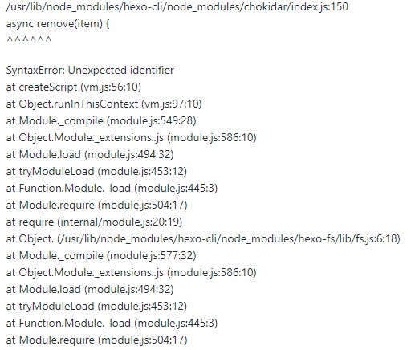

hexo备份恢复
hexo 备份如何恢复
下载仓库
从git上下载仓库，并切换分支
安装模块
1 | # 先安装npm |
下载完之后，更换npm下载源
1 | # 安装modules, 速度非常慢, 可以先更换npm下载源 |
如果执行hexo命令显示异常，如下图：

那么需要更新nodejs
1 | # 更新npm |
部署git
主要是两个方面：
- 设置全局用户名和邮箱(用于
commit) - 生成密钥(用于
push权限)
1 | git config --global user.name "your name" |
关于 hexo-server
因为是放在服务器上，所以希望执行 hexo server 之后，外网也可以预览。
修改 node_modules/hexo-server/lib/server.js
1 | function formatAddress(ip, port, root) { |
然后打开服务器 4000 端口, 服务器打开端口在这
执行命令
1 | hexo server -i 0.0.0.0 |
打开浏览器，打开控制台，看看缺少哪些js文件，就到theme的_config.yml中找github地址进行下载